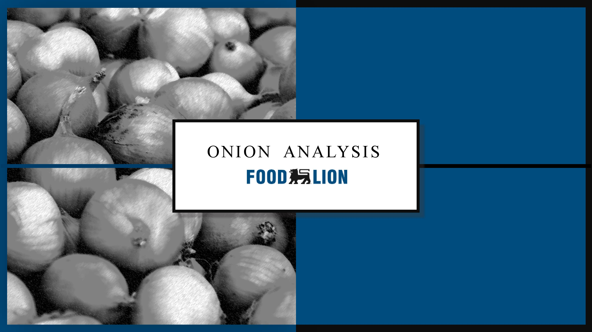
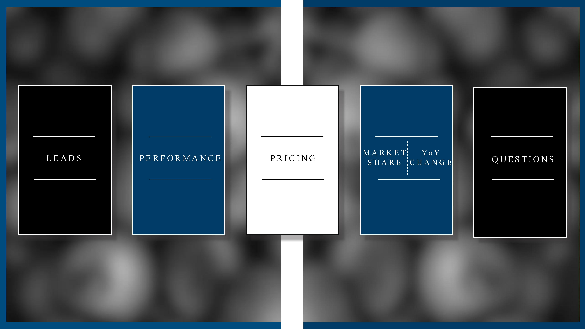
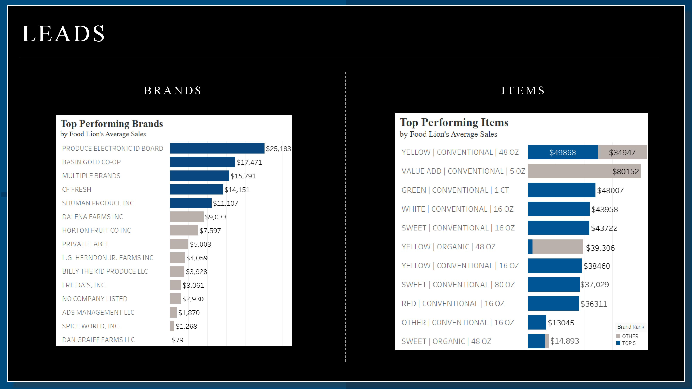
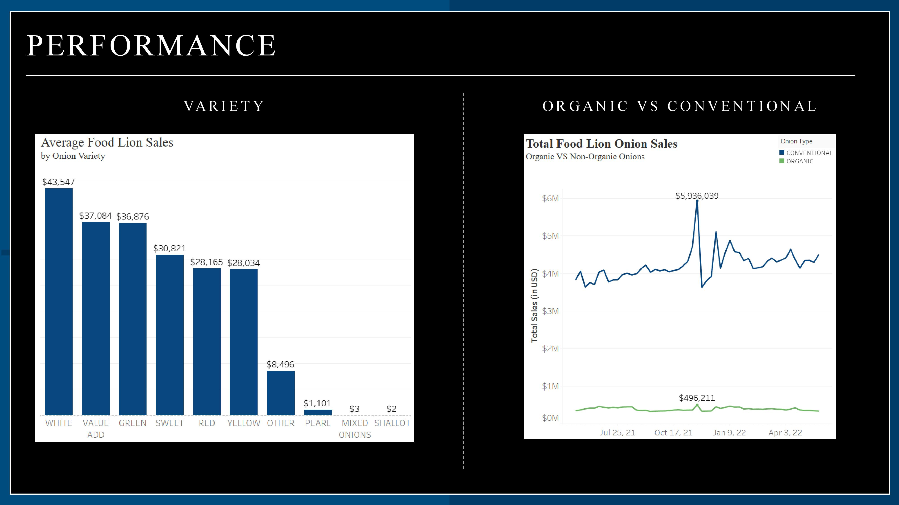
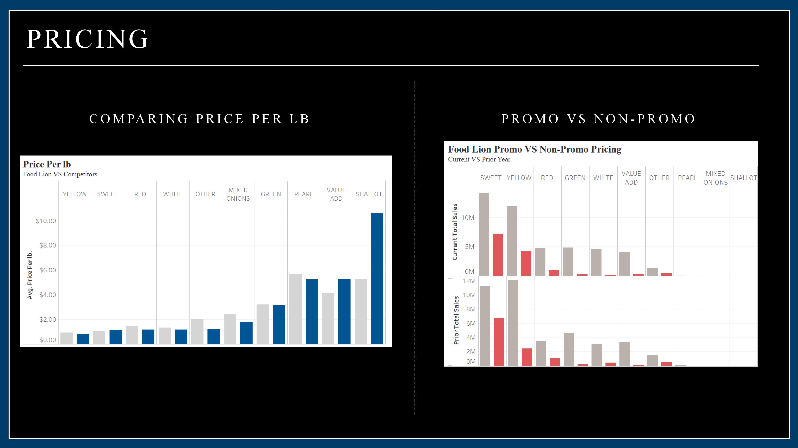
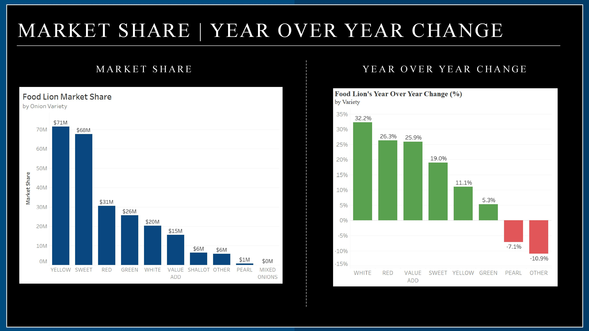

Sales & Marketing Analysis | R & Tableau
Cleaned, transformed, and merged data using R. Built visuals using Tableau. Organized data and insights using Power Point.
Click Me to View R Code
Onion Analysis Screenshots






Power BI Dashboard
Based on a consulting project, this dashboard wasuilt and designed to reflect alumni data highlighting occupation title and salary.
SQL Querying & Power BI Dashboard
Utalized CTE's, inner & left joins, and unions to retrieve data. Then loaded the data into Power BI and designed a report.
E-Commerce Consumer Exploration | Machine Learning
Processed data using Python (pandas). Created graphs using R. Applied decision tree machine learning algorithm to predict customer's frequency in buying products.